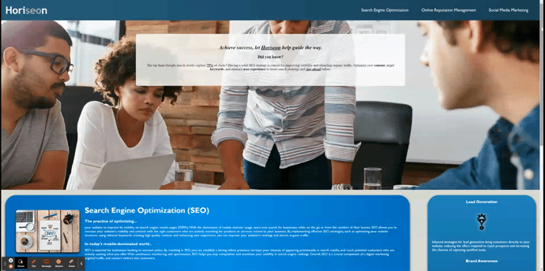

Projects
üìÖ My-Daily-Planner
Built With: JavaScript, HTML, CSS, jQuery, Moment.js, Bootstrap

Organize your day hour by hour with this application! Each time block is color coded to present past, current, and upcoming hours. Users can create an entry and individually save or delete each entry, or do all of that with a push of a button. Designed for both mobile and desktop use!
View Project on GitHubüìÇ Taskmaster-Pro
Built With: JavaScript, HTML, CSS, jQuery, Moment.js, Bootstrap

A more modern Kanban Board which allows users to create tasks and systematically track the process from start to finish. Each task is assigned a due date and becomes color coded when the date approaches. Designed for both mobile and desktop, mobile users have an exclusive button for task creation.
View Project on GitHubüìã Taskinator
Built With: HTML, CSS, JavaScript
Featuring a simple yet colorful interface, this Kanban Board allows users to create and track their tasks from start to finish. Users can click and drag each task to the next stage or use a drop-down menu to do that.
View Project on GitHubGit-It-Done
Built With: HTML, CSS, JavaScript, GitHub API


With over a million public repositories on GitHub, the need to find specific repositories becomes more necessary. With Git-It-Done you can search for GitHub usernames or search by topics to display an array of repo's that highlights it's amount of open issues. Designed for both desktop and mobile use!
View Project on GitHubü§ê JavaScript-Password-Generator
Built With: HTML, CSS, JavaScript
Generate a randomized password through this generator! Users are presented with a list of options of what they'd like to include for a finalized and most importantly, random password. It's desktop and mobile friendly!
View Project on GitHubüìö Coding-Quiz-Extraordinaire
Built With: HTML, CSS, JavaScript

Recall your coding knowledge with this timed quiz app! Users have a minute to answer multiple questions and incorrect answers will result in a ten second penalty. Your remaining time is your score, save it and compare it with your friends.
View Project on GitHubüìà Horiseon
Built With: HTML, CSS

Did you know that the top three Google search results capture 75% of clicks? Horiseon is a platform focused on highlighting the importance of SEO optimization and how it can improve visibility and attract organic traffic. Built for both desktop and mobile devices.
View Project on GitHubü¶µ Run-Buddy
Built With: HTML, CSS


Featured within this repository is the landing page of a fitness platform called Run Buddy, these pages showcase a fitness company that is promoting their platform and trying to sell their services as physical trainers. Built for both desktop and mobile devices.
View Project on GitHubView more projects on my GitHub Repositories Page.